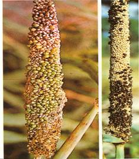

| Home |
| PEARLIMILLED |
MAJOR DISEASES |
| 1. Downy mildew |
| 2. Smut |
| 3. Rust |
| 4. Ergot or Sugary disease |
| Questions |
| Download Notes |
PEARLMILLED :: MAJOR DISEASE :: SMUT
Smut - Tolyposporium penicillariae
Symptoms
The pathogen infects few florets and transforms them into plump sori containing smut spores. The sori are larger than normal healthy grains and when the sori mature they become dark brown releasing millions of black smut spore balls.
|  | |
Symptoms |
|
Pathogen
The fungus is mostly confined to the sorus. The sori contain spores in groups and are not easy to separate. Each spore is angular or round and light brown.
Favourable Conditions
- High relative humidity.
- Successive cropping with pearlmillet.
Disease cycle
- The pathogen survives as spore balls in the soil and serves as primary source of inoculum. Secondary spread is by air-borne conidia.
Management
- The damage caused by the fungus is negligible.
- Removal and destruction of affected ear head will help in controlling the disease.